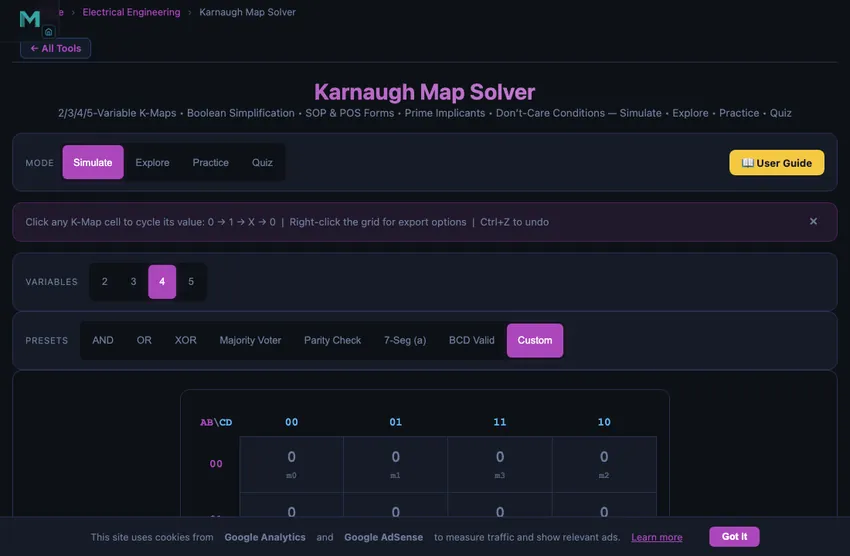
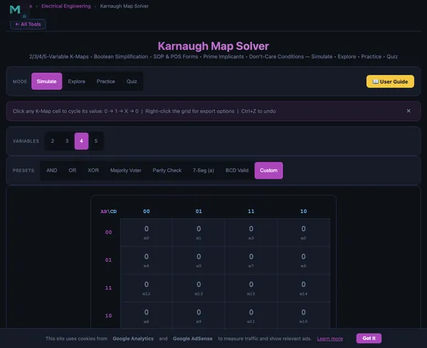

Karnaugh Map Solver
3D Model — Karnaugh Map Solver
Free Karnaugh Map solver for 2–5 variable K-Maps. Simplify Boolean expressions with SOP/POS forms, minterms, prime implicants & grouping visualization. No signup.
2/3/4/5-Variable K-Maps • Boolean Simplification • SOP & POS Forms • Prime Implicants • Don’t-Care Conditions — Simulate • Explore • Practice • Quiz
1 Overview
Welcome to the Karnaugh Map Solver — a free, browser-based tool for simplifying Boolean expressions using K-Maps. This simulator supports 2, 3, 4, and 5-variable Karnaugh Maps, automatically finds prime implicants, generates minimal SOP (Sum of Products) and POS (Product of Sums) expressions, and visualizes groupings with colour-coded overlays. It is designed for digital electronics students, computer engineering learners, and vocational education instructors — all without installation, signup, or licensing fees.
The solver includes 8 preset functions (AND, OR, XOR, Majority Voter, Parity Check, 7-Segment decoder, BCD Valid, and Custom), 4 interactive learning modes (Simulate, Explore, Practice, Quiz), and a step-by-step solution walkthrough to help you understand the simplification process from start to finish.
2 Setting Up the Problem
Select the number of variables (2, 3, 4, or 5) using the variable pills. The K-Map grid updates automatically. Click any cell in the grid to cycle its value through 0, 1, and X (don’t care). The solver computes the minimal expression in real time and highlights the groups on the map.
Load a preset function to instantly see how common Boolean functions are simplified. Toggle between SOP and POS forms to compare the two canonical representations. Enable Show Groups to see colour-coded rectangles on the K-Map, or Show Step-by-Step for a detailed walkthrough of each grouping decision.
3 K-Map Cell Values
0 (Zero): The output is LOW for this minterm. In SOP simplification, 0-cells are excluded from groups.
1 (One): The output is HIGH for this minterm. In SOP form, all 1-cells must be covered by at least one group.
X (Don’t Care): The output can be either 0 or 1 for this minterm. Don’t-care cells may be included in groups if doing so creates larger groups and a simpler expression, but they are never required to be covered.
4 Grouping Rules
Groups in a K-Map must follow these rules: (1) Groups must contain 1, 2, 4, 8, or 16 cells (powers of two). (2) Groups must be rectangular — no L-shapes or diagonals. (3) Groups can wrap around the edges of the map (top-bottom and left-right are adjacent). (4) Every 1-cell must be included in at least one group. (5) Make groups as large as possible to eliminate the most variables. (6) Overlapping groups are allowed.
Each group of size 2n eliminates n variables from the product term. A group of 1 cell eliminates no variables, a group of 2 eliminates 1, a group of 4 eliminates 2, and so on. The remaining variables that stay constant across the group form the product term for that group in the SOP expression.
5 SOP & POS Forms
Sum of Products (SOP): Group the 1-cells. Each group produces a product (AND) term of the variables that remain constant. The final expression is the OR (sum) of all product terms. Example: F = AB + A′C.
Product of Sums (POS): Group the 0-cells. Each group produces a sum (OR) term. The final expression is the AND (product) of all sum terms. Example: F = (A+B)(A′+C). POS form can sometimes yield a simpler circuit, especially when there are more 1s than 0s in the truth table.
6 Keyboard Shortcuts & Export
Keyboard shortcuts:
- Ctrl+Z (or Cmd+Z on Mac) — Undo the last cell change.
- Ctrl+Shift+Z — Redo a previously undone change.
Right-click context menu: Right-click anywhere on the K-Map grid to access:
- Copy Expression — copies the current SOP or POS expression to clipboard.
- Export Truth Table (CSV) — downloads the full truth table as a CSV file.
- Export K-Map (PNG) — saves the K-Map grid as an image.
- Clear All Cells — resets all cells to 0 (can be undone with Ctrl+Z).
7 Tips & Tricks
- Always start by making the largest possible groups — larger groups mean simpler expressions.
- Use don’t-care conditions aggressively to enlarge groups. They are free to include.
- Check both SOP and POS forms — sometimes one is significantly simpler than the other.
- For 5-variable maps, think of the map as two overlaid 4-variable maps. Groups can span both layers.
- Compare the Literals Saved readout to see how much simplification the K-Map achieves over the canonical form.
- Use the Step-by-Step mode to understand why each group was chosen and how variables are eliminated.
Karnaugh Map Solver — Simplify Boolean Expressions Visually

A Karnaugh Map (K-Map) is a visual method for simplifying Boolean algebra expressions used in digital logic design. This free Karnaugh Map solver supports 2–5 variable maps, generates minimal SOP and POS expressions using the Quine-McCluskey algorithm, and visualizes prime implicant groups in real time.
How Karnaugh Maps Work
A K-Map is a special arrangement of a truth table into a two-dimensional grid. The rows and columns are ordered using Gray code (reflected binary code), so that adjacent cells differ by exactly one variable. This adjacency property is the key to simplification: when two adjacent cells both contain 1, the variable that changes between them can be eliminated from the Boolean expression. For a 2-variable K-Map, the grid is 2×2 (4 cells). A 3-variable map is 2×4 (8 cells), a 4-variable map is 4×4 (16 cells), and a 5-variable map uses two overlaid 4×4 grids (32 cells).
SOP and POS Simplification
In Sum of Products (SOP) simplification, you group adjacent 1-cells into rectangular groups of 1, 2, 4, 8, or 16. Each group generates a product term containing only the variables that remain constant across all cells in the group. The simplified expression is the OR of all product terms. In Product of Sums (POS) simplification, you instead group the 0-cells, producing sum terms that are ANDed together. Both methods yield logically equivalent expressions, but one form may require fewer gates than the other depending on the function. This solver lets you toggle between SOP and POS instantly to compare both representations.
Prime Implicants and Essential Prime Implicants
A prime implicant is a group that cannot be combined with another group to form a larger group — it is maximally large. An essential prime implicant is a prime implicant that covers at least one minterm not covered by any other prime implicant. The Quine-McCluskey algorithm and Petrick’s method formalise this process for functions with many variables, but for 2–5 variable functions, the K-Map provides an intuitive visual approach. This solver identifies all prime implicants and highlights essential ones, showing you exactly which groups are required in the minimal expression.
Don’t-Care Conditions in Practice
Don’t-care conditions arise when certain input combinations either never occur or produce outputs that are irrelevant to the design. In BCD (Binary-Coded Decimal) systems, for example, the 4-bit codes 1010 through 1111 (decimal 10–15) never represent valid digits, so their outputs are don’t-cares. In K-Map simplification, don’t-care cells (marked X) can be included in groups as either 0 or 1, whichever produces larger groups and simpler expressions. Proper use of don’t-cares can dramatically reduce the number of logic gates needed.
Applications of K-Map Simplification
K-Map simplification is essential in digital circuit design. Combinational logic circuits such as adders, decoders, multiplexers, and comparators all benefit from minimised Boolean expressions that use fewer gates, consume less power, and operate faster. In FPGA and ASIC design, minimised logic reduces the number of look-up tables (LUTs) or transistors required. PLC programming uses simplified ladder logic that mirrors minimised Boolean expressions. Even in software, understanding Boolean minimisation helps optimise conditional logic and decision trees.

Why Gray Code Order — The Single Insight K-Maps Depend On
The columns of a K-map are not in normal binary order (00, 01, 10, 11). They are in Gray code order (00, 01, 11, 10). The difference is critical. In Gray code, adjacent cells differ by exactly one bit. In binary, the jump from 01 to 10 changes both bits, so cells aren’t single-bit-adjacent.
Why does this matter? K-map simplification works by spotting physically adjacent 1-cells where the variable representing the changing bit can be eliminated. With Gray code, every cell adjacency corresponds to exactly one variable changing. With normal binary order, the adjacencies wouldn’t correspond to one-bit changes and the visual simplification trick wouldn’t work. Karnaugh’s 1953 contribution was recognising that this Gray-code arrangement turned algebraic simplification into a picture-recognition task.
A 4-Variable Worked Example — The Speed You Get
Take a 4-variable function with minterms {0, 2, 5, 7, 8, 10, 13, 15}. Boolean algebra simplification would take a couple of pages. K-map approach:
- Plot all 8 minterms on a 4×4 K-map (with Gray-coded rows AB and columns CD).
- Look for the largest possible groups of 1s. Two visible: a 4-cell group covering BD’ (top-row and bottom-row, columns 00 and 10), and a 4-cell group covering BD (the middle columns).
- Read off the simplified expression: F = BD + B’D’.
- That’s an XNOR — the simplified function is just the XOR-complement of B and D, with no dependence on A or C at all.
From eight minterms to one XNOR gate. That is the kind of reduction that motivated 70 years of digital-logic teaching to start with K-maps.
When K-Maps Hit Their Limit
K-maps work cleanly up to 4 variables (16 cells). A 5-variable map needs two overlaid 4×4 grids; readable but fiddly. A 6-variable map needs four overlaid grids and is unwieldy. Beyond 6 variables, switch to the Quine-McCluskey algorithm, which is tabular and machine-friendly. Modern logic synthesis tools (used in FPGA and ASIC design) implement variants of Espresso or BDD-based minimisation, handling thousands of variables. K-maps remain in undergraduate teaching because they build the intuition that the algorithms automate.
Don’t-Care Conditions — The Cheat Code
A don’t-care entry (typically marked X or d) means the output for that input combination is irrelevant — either because the input never occurs (e.g., BCD encoding leaves 6 of 16 combinations undefined) or because the system doesn’t care what happens. K-map simplification lets you treat each X as either 0 or 1, whichever makes your groups larger. A function with three don’t-cares often simplifies to half the gate count. Real BCD-to-7-segment decoder ICs (74LS47, etc.) use exactly this trick to reduce gate count.
References
- Karnaugh, M. (1953) — The Map Method for Synthesis of Combinational Logic Circuits. AIEE Trans. The original paper.
- Mano, M. M. & Ciletti, M. D. — Digital Design, 6th ed., Chapter 3 (Gate-Level Minimization).
- Quine, W. V. (1952) — The Problem of Simplifying Truth Functions. American Mathematical Monthly. The algorithmic equivalent.
Explore Related Simulators
If you found this Karnaugh Map solver helpful, explore our Logic Gates Simulator, PLC Ladder Logic Simulator, and Ohm’s Law Simulator for more hands-on digital logic practice.